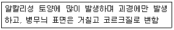

종자기사 (2009-03-01 기출문제)
1과목: 종자생산학
1. 종자 내 암모니아가 축적되어 발아가 억제되는 것은?
- 장미
- 사탕무
- 땅콩
- 겨자
(정답률: 알수없음)

2. 작물의 화아분화를 촉진하는데 가장 영향력이 큰 것은?
- 온도, 수분
- 수분, 질소
- 일장, 수분
- 온도, 일장
(정답률: 알수없음)
3. 메타크세니아(metaxenia)현상이 나타나는 작물은?
- 감
- 보리
- 수수
- 완두
(정답률: 알수없음)
4. 벼(禾本)과 종자에서 초엽(coleoptile)의 기능은?
- 양분의 저장
- 배(胚)에 양분 전달
- 발아시 유아(幼芽)의 보호
- 발아 후 광합성 작용
(정답률: 알수없음)
5. 벼 도열병 방제에 주로 사용되는 약제가 아닌 것은?
- 베노밀 수화제
- 카프로파미드 액상수화제
- 디노테퓨란 수화제
- 프탈라이드 수화제
(정답률: 알수없음)
6. 종자 프라이밍(priming) 약제가 갖추어야 할 구비조건과 거리가 먼 것은?
- 종자 내에 일정한 수분을 유지시킬 것
- 식물 생육에 유효할 것
- 식물에 무독성일 것
- 종자의 휴면타파에 효과적일 것
(정답률: 알수없음)
7. 웅성불임을 이용한 F1종자 생산시 웅성불임계통은 무엇으로 쓰이는가?
- 종자친(種子親)
- 유지친(維持親)
- 화분친(花粉親)
- 화분친과 유지친
(정답률: 알수없음)
8. 제웅의 방법 중 개열법의 설명으로 가장 적합한 것은?
- 핀셋으로 꽃망울을 헤쳐 수술을 꺼내는 것
- 영의 끝을 잘라 수술을 제거하는 것
- 꽃망울 끝의 꽃잎을 수술과 뽑아내는 것
- 암술의 기능을 상실치 않는 한계의 고온으로 처리하여 제웅하는 것
(정답률: 72%)
9. 종자의 발아능 검사를 위한 tetrazolium 검사시 처리농도(%) 범위로 가장 적합한 것은?
- 0.1 ~ 1.0
- 1.0 ~ 2.0
- 2.0 ~ 3.0
- 3.0 ~ 4.0
(정답률: 알수없음)
10. 상추 종자에서 지베렐린이 호흡효소를 활성화시켜 발아를 촉진시킬 수 있는 한계 수분 함량은?
- 15%
- 20%
- 50%
- 73%
(정답률: 40%)
11. 식물의 성숙한 배낭 1개가 갖고 있는 핵의 종류와 수는?
- 난핵 1개, 극핵 3개, 반족세포핵 4개
- 난핵 2개, 조세포핵 3개, 극핵 3개
- 난핵 1개, 극핵 2개, 조세포핵 3개, 반족세포핵 3개
- 난핵 1개, 극핵 2개, 조세포핵 2개, 반족세포핵 3개
(정답률: 알수없음)
12. 수박에 있어서 전좌현상(轉座現象)을 이용한 육종을 시도하고 있는데 그 이유는?
- 수박의 생육을 촉진시키기 위하여
- 수박의 착과수를 많게 하기 위하여
- 씨없는 수박을 만들기 위하여
- 씨가 적은 수박을 육성하기 위하여
(정답률: 36%)
13. 종자의 수명에 관여하는 주 요인과 거리가 먼 것은?
- 습도
- 미생물
- 기계적 손상
- 탄산시비
(정답률: 59%)
14. 발아검사에서 발아묘의 판별 및 발아율의 검사에 대한 설명으로 틀린 것은?
- 발아묘의 판별은 정상묘와 비정상묘로 구분한다.
- 정상묘와 비정상묘는 외관으로 판별하며, 정상묘 이외의 묘는 전부 비정상묘이다.
- 비정상묘는 발아 환경이 좋은 곳에서 정상적인 식물로 발육할 능력이 없는 묘이다.
- 발아율 검정에서 경실종자 및 휴면종자를 제외하고 백분율로 계산한다.
(정답률: 54%)
15. 종자 프라이밍 처리(seed priming treatment)에 대한 설명으로 틀린 것은?
- 경실종자의 휴면타파에 효과가 크다.
- 삼투용액 처리와 고형물질 처리 등으로 일부 작물에 대하여 유용하게 이용되고 있다.
- 삼투용액 처리는 처리 직후에 파종하지 않으면 효과가 빠르게 소멸되는 단점이 있다.
- 고형물질 처리는 생장조절물질이나 영양물질까지도 무리 없이 혼입할 수 있는 장점이 된다.
(정답률: 알수없음)
16. 제웅 후 충매에 의한 자연교잡을 주로 이용하는 것은?
- 멜론
- 가지
- 배추
- 토마토
(정답률: 74%)
17. 종자의 훈증제 사용에 대한 설명으로 틀린 것은?
- 불연성이며, 가격이 싸다.
- 종자활력에 영향을 미치지 않는다.
- 병해충 방제를 위한 저장 전 처리에 알맞다.
- 훈증제는 고체, 액체, 기체 상태로 되어 있다.
(정답률: 알수없음)
18. 다음 종자 중 수명이 가장 짧은 것은?
- 무
- 양파
- 오이
- 배추
(정답률: 79%)
19. 벼 농사에서 다음 시기 중 어느 시기에 가장 적은 양의 물이 필요한가?
- 수잉기
- 무효분얼기
- 착근기
- 출수개화기
(정답률: 알수없음)
20. 당근 채종에서 추대한 화지를 순지르기 하는 주된 목적은?
- 도복을 막기 위하여
- 광선 투사를 좋게 하기 위하여
- 각 화지의 균일한 발육을 위하여
- 주지의 결실을 좋게 하기 위하여
(정답률: 60%)
2과목: 식물육종학
21. 재배식물과 기원지를 연결한 것 중 틀린 것은?
- 벼 - 중국남부 및 아샘지방 연결지역
- 콩 - 북아메리카
- 옥수수 - 중앙아메리카 및 멕시코 남부
- 감자 - 남미 페루지역
(정답률: 알수없음)
22. 양친 중 P1의 분산량은 42, P2의 분산량은 46, F2의 분산량은 88, F1의 분산량은 44일 때 F2세대에서의 유전력은?
- 0.3
- 0.5
- 0.7
- 0.9
(정답률: 59%)
23. AaBbCcDd를 자식(自植)하였을 때 얻을 수 있는 순계(純系)의 종류 수는?(단, 대립유전자간에는 완전독립임)
- 8
- 16
- 64
- 128
(정답률: 알수없음)
24. 유전자의 기본적인 활동으로 가장 적합한 것은?
- 형질발현, 상호전좌
- 자기복제, 형질발현
- 키아스마 형성, 자기복제
- 구성작용, 플라스마진
(정답률: 50%)
25. Agrobacterium을 이용한 형질전환법에서 유전자 운반체의 역할을 하는 것은?
- F plasmid
- Ti plasmid
- cosmid
- bacteriophage λ
(정답률: 82%)
26. 잡종강세 현상의 발현(expression)에 대한 설명으로 틀린 것은?
- 줄기 및 잎의 생육이 왕성해 진다.
- 개화와 성숙이 촉진될 수 있다.
- 외계 불량조건에 대한 저항성이 증대된다.
- F2에서 그 효과가 가장 강하게 나타나며 일반적으로 F3까지는 그 효과가 지속된다.
(정답률: 알수없음)
27. 우리나라에서 고구마 교배 육종에 이용되는 개화 촉진법으로 가장 많이 사용되고 있는 방법은?
- 박피 단일처리
- 박피 장일처리
- 접목 장일처리
- 접목 단일처리
(정답률: 60%)
28. 변이의 감별방법이 아닌 것은?
- 후대검정
- 변이의 상관
- 특성검정
- 조합능력검정
(정답률: 알수없음)
29. 차대에 유전자형이 (S)msms인 웅성불임 개체만 나올 수 있는 교배조합은?(단, 괄호안은 세포질형으로서 S는 불임세포질이고, N은 정상세포질이다. 그리고 ms는 웅성불임유전자이다.)
- (S)msms × (N)msms
- (S)msms × (N)Msms
- (S)msms × (S)Msms
- (S)msms × (S)MsMs
(정답률: 79%)
30. 약배양 하에 얻은 반수체 식물을 2배체로 만드는데 염색체 배가를 위하여 주로 사용하는 약제는?
- 콜히친
- 에틸렌
- NAA
- EMS
(정답률: 84%)
31. 유전 변이체를 얻을 목적으로 수행하는 것은?
- 질소 비료 시용
- 지역 적응성 검정
- 일장 처리
- 인공 교배
(정답률: 알수없음)
32. 반수체를 이용한 육종의 장점으로 옳은 것은?
- 잡종집단의 유전적 조상이 다양해진다.
- 유전적으로 고정된 순계를 빨리 얻을 수 있어 육종기간이 단축된다.
- 양적형질의 개량에 가장 효율적인 방법이다.
- 식물체의 생육이 왕성해지며 그 자체의 불임성이 낮아진다.
(정답률: 80%)
33. 세포질·유전자적 웅성불임성을 이용하여 옥수수 1대 잡종 종자를 대량으로 채종하기 위해서 육종가 또는 육종기관은 어떤 종류의 계통을 세트로 유지하고 있어야 하는가?
- 웅성불임계통, 내충성계통, 근동질유전자계통
- 근동질유전자계통, 웅성불임유지계통, 다수성게통
- 내충성계통, 다수성계통, 임성회복유전자계통
- 임성회복유전자계통, 웅성불임유지계통, 웅성불임계통
(정답률: 55%)
34. 임성(稔性)이 가장 양호한 것은?
- 반수체
- 2배체
- 3배체
- 이수체
(정답률: 46%)
35. 다음 중 마늘의 품종 육성에 가장 알맞은 방법은?
- 잡종강세 육종법
- 돌연변이 육종법
- 여교잡 육종법
- 계통 육종법
(정답률: 알수없음)
36. 종자 퇴화의 원인으로 적합하지 않은 것은?
- 유전자 돌연변이
- 교잡변이
- 방황변이
- 병해감염
(정답률: 알수없음)
37. 계통분리법에 대한 설명으로 옳은 것은?
- 집단선발법은 계통분리법의 일종이다.
- 주로 자가수정 작물에서 선발을 거듭하는 방법으로 타가수정 작물의 품종 특성 유지에도 간혹 이용될 수 있다.
- 계통이 철저히 분리되어야 하므로 자식에 의한 격리 채종을 엄격히 유지하는 것이 가장 중요하다.
- 계통분리법의 하나인 모계선발법은 주로 영양번식 작물에 국한된다.
(정답률: 알수없음)
38. 연속변이를 하는 양적형질의 유전성 여부를 확인하고자 할 때 사용되는 검정법은?
- 후대검정
- 특성검정
- 달관검정
- 일양성검정
(정답률: 알수없음)
39. 재배식물에 발생하는 병에 대한 저항성은 여러 가지 기준에 의하여 분류된다. 다음 중 비슷한 의미를 가진 저항성끼리 모여 있는 것은?
- 특이적 저항성, 수직저항성, 양적 저항성
- 수평저항성, 비특이적 저항성, 양적 저항성
- 특이적 저항성, 수평저항성, 질적 저항성
- 수직저항성, 비특이적 저항성, 질적 저항성
(정답률: 55%)
40. 토마토 과실 하나 안에 종자가 500개 생겼을 때에 그 생성 과정을 바르게 설명한 것은?
- 한개의 난세포와 한개의 화분에 의해 생긴 한개의 종자가 분열하여 500개의 종자를 생산하였다.
- 한개의 난세포가 500개의 화분에 의해 수정되어 종자로 발육하였다.
- 500개의 난세포가 하나의 화분에 의해 수정되어 종자로 발육하였다.
- 500개의 난세포가 각각 다른 화분에 의해 수정되어 종자로 발육하였다.
(정답률: 알수없음)
3과목: 재배원론
41. 보리밭의 이랑과 이랑 사이에 콩을 심어서 보리를 수확한 후 콩이 자라 수확을 했다면 다음 중 어떤 작부방식에 해당하는가?
- 교호작
- 주위작
- 간작
- 혼작
(정답률: 알수없음)
42. 감자나 고구마의 파종기나 이식기가 늦어졌을 때 T/R율이 커지는 이유로 옳은 것은?
- 탄수화물의 축적이 지하부에서 더 빨리 진행되기 때문이다.
- 지하부의 중량감소가 지상부의 중량감소보다 커지기 때문이다.
- 지하부의 생장보다 지상부의 생장이 더 크게 저해되기 때문이다.
- 지후부에서 질소집적이 많아지고 단백질 합성이 왕성해지기 때문이다.
(정답률: 60%)
43. 식물의 상적발육에 관여하는 식물체의 색소는?
- 엽록소(Chlorophyll)
- 피토크롬(phytochrome)
- 안토시아닌(anthocyanin)
- 카로티노이드(carotenoid)
(정답률: 알수없음)
44. 작물의 도복은 품종의 특성에도 있지만 환경에 많은 영향을 받는다. 다음 중 도복하기 가장 쉬운 조건은?
- 밀식, 다량의 질소시비, 줄기에 건물함량의 저하, 조직 중 리그닌 및 당류 함량 과다
- 소식, 소량의 질소시비, 줄기에 건물함량의 증대, 조직 중 리그닌 및 당류 함량 과다
- 밀식, 다량의 질소시비, 줄기에 건물함량의 저하, 조직 중 리그닌 및 당류 함량 부족
- 밀식, 소량의 질소 시비, 줄기에 건물함량의 증대, 조직 중 리그닌 및 당류 함량 부족
(정답률: 50%)
45. 토양용액에 수소이온[H+]이 0.001M 농도로 존재 할 때의 pH 값은?
- 1
- 3
- 9
- 11
(정답률: 알수없음)
46. 개체군생장속도(crop growth rate)를 구하는 공식으로 옳은 것은?
- 엽면적 × 순동화율
- 엽면적 × 상대생장율
- 엽면적지수 × 순동화율
- 비엽면적 × 상대생장율
(정답률: 알수없음)
47. 콩의 수광태세를 좋게하여 광합성 효과를 높이는데 가장 효과적인 초형은?
- 꼬투리가 원줄기에 많고, 밑에까지 착생한다.
- 잎이 넓고 무성하다.
- 가지를 많이 치고, 가지가 길다.
- 엽병의 각도가 크다.
(정답률: 알수없음)
48. 물리적 병충해 방제법이 아닌 것은?
- 천적을 이용한다.
- 낙엽을 태운다.
- 토양을 담수한다.
- 상토를 소토한다.
(정답률: 알수없음)
49. 오이 묘를 본포에 이식할 때 포기사이를 넓게 띄어서 구덩이를 파고 이식하는 방법은?
- 조식(條植)
- 점식(點植)
- 혈식(穴植)
- 난식(亂植)
(정답률: 알수없음)
50. 재배의 일반적인 특징으로 거리가 먼 것은?
- 공산물에 비해 분업적으로 생산하기 어렵다.
- 토지생산성은 수확체감의 법칙이 적용된다.
- 농산물은 가격에 대한 수급의 탄력성이 적다.
- 공산물에 비하여 수요의 탄력성이 크다.
(정답률: 알수없음)
51. 내건성이 강한 작물의 특성으로 옳은 것은?
- 표면적/체적의 비가 크다
- 체내 수분 상실이 적다.
- 탈수 때 원형질의 응집이 크다.
- 급수할 때에 수분 흡수능이 작다.
(정답률: 알수없음)
52. 북방형 목초의 생육 적온으로 가장 적합한 것은?
- 약 6 ~ 11℃
- 약 12 ~ 18℃
- 약 19 ~ 24℃
- 약 25 ~ 30℃
(정답률: 알수없음)
53. 용도에 따른 분류 상 화곡류의 잡곡에 속하지 않는 것은?
- 귀리
- 수수
- 옥수수
- 조
(정답률: 64%)
54. 국화의 개화를 지연시키려면 어떠한 처리를 하여야 하는가?
- 장일처리
- 단일처리
- 고온처리
- 저온처리
(정답률: 알수없음)
55. 식물의 생육 또는 성숙을 생장과 분화라는 개념으로 표현한 것은?
- C/N율
- T/R율
- 엽면적 지수
- G-D균형
(정답률: 60%)
56. 종자 파종시 복토를 깊게 해야 하는 종자들로만 짝지어진 것은?
- 가지, 오이, 상추
- 담배, 상추, 우엉
- 벼, 옥수수, 버뮤다그래스
- 콩, 옥수수, 보리
(정답률: 46%)
57. 토성의 특징으로 옳은 것은?
- 사토는 척박하나, 토양침식이 적다.
- 식토는 투기·투수가 불량하고, 유기질 분해가 빠르다.
- 부식토는 세토가 부족하고, 산성을 나타낸다.
- 식토는 세토 중의 점토 함량이 25% 이상인 토양이다.
(정답률: 59%)
58. 사료작물을 이용에 따라 분류할 때 해당되지 않는 것은?
- 예취용
- 청예용
- 방목용
- 사일리지용
(정답률: 31%)
59. 이론적으로 단위면적당 시비량을 계산할 때 이용하는 비료요소의 흡수율은 어떻게 구하는가?
- 비료요소의 시용량과 실제 작물이 흡수한 양으로 구한다.
- 단위면적당 전수확물 중에 함유되어 있는 비료요소를 분석·계산하여 구한다.
- 단위면적당 수량괴 이 수량을 낼 때의 전체 흡수량을 기초로 하여 구한다.
- 어떤 비료 요소에 대하여 무비재배시의 단위면적당 전수확물 중에 함유되어 있는 그 비료 요소량을 분석·계산하여 구한다.
(정답률: 20%)
60. 다음과 같은 조건인 경우 본답 100m2의 모내기에 소요되는 모수는 약 몇 본인가?(단, 재식거리는 줄 사이 30㎝, 포기 사이 20㎝, 1포기당 5본식으로 한다.)
- 86666본
- 83333본
- 17333본
- 16666본
(정답률: 알수없음)
4과목: 식물보호학
61. 식물의 과민성 반응은 다음 중 어느 기작에 속하는가?
- 감수성
- 저항성
- 내병성
- 면역성
(정답률: 알수없음)
62. 곤충이 지구상에 번성하게 된 원인 중 그 내용이 틀린 것은?
- 날개의 발달
- 완전변태를 함
- 와골격이 퇴화하여 수분 손실 억제
- 몸의 구조적 적응력이 발달
(정답률: 알수없음)
63. 매미목에 속하지 않는 곤충은?
- 말매미
- 벼멸구
- 조팝나무진딧물
- 진달래방패벌레
(정답률: 40%)
64. 요소(urea)계 살충제의 설명으로 옳은 것은?
- 곤충의 키틴 생합성을 저해하여 살충 효과를 나타낸다.
- 곤충의 신경축색에서 자극전달을 교란시켜 반복 흥분을 일으켜 살충 효과를 나타낸다.
- 곤충의 신경전달물질 분해효소의 활성을 저해하여 살충 효과를 나타낸다.
- 곤충의 성페로몬을 이용하여 교미를 교란시켜 살충 효과를 나타낸다.
(정답률: 알수없음)
65. 다음은 감자의 어떤 병의 증상인가?

- 둘레썩음병
- 더뎅이병
- 역병
- 잎말림병
(정답률: 알수없음)
66. 식물병의 방제법으로 틀린 것은?
- 생장점배양은 영양번식식물의 무병종묘 생산기술이다.
- 배추 무사마귀병 방제에는 산성토양이 좋다.
- phthium Rhizoctonia는 윤작만으로 방제하기 어렵다.
- 배나무 붉은별무늬병 방제를 위해 향나무를 제거한다.
(정답률: 50%)
67. 곤충에서 앞창자신경계와 협동하여 변태호르몬을 분비하며, 머릿속에 있는 한쌍의 신경구 모양의 조직은?
- 지방체
- 알라타체
- 편도세포
- 진피세포
(정답률: 알수없음)
68. 감자 잎말림병의 병원 약칭은?
- TMV
- PVX
- PLRV
- CMV
(정답률: 알수없음)
69. 어류에 대하여 매우 강한 독성을 나타내는 농약은?
- 유기황 살균제
- 카바베이트계 살충제
- 유기인계 살충제
- 유기염소계 살충제
(정답률: 알수없음)
70. 진균에 의한 식물병은?
- 감나무 탄저병
- 감자 무름병
- 대추나무 빗자루병
- 토마토 풋마름병
(정답률: 53%)
71. 인체 1일 섭취허용량은 실험동물에서 전혀 건강에 영향이 없는 양에다 보통 몇 배의 안전계수로 곱하여 산출하는가?
- 0.1배
- 0.3배
- 0.5배
- 0.01배
(정답률: 알수없음)
72. 화본과 잡초가 아닌 것은?
- 둑새풀
- 매자기
- 바랭이
- 강아지풀
(정답률: 알수없음)
73. 1ppm 용액이란?
- 용액 1000㎖ 중에 용질이 1㎎ 녹아 있는 용액
- 용액 1000㎖ 중에 용질이 10㎎ 녹아 있는 용액
- 용액 1L 중에 용질이 1g 녹아 있는 용액
- 용액 1L 중에 용질이 10g 녹아 있는 용액
(정답률: 46%)
74. 농약의 구비조건이 아닌 것은?
- 인축에 대한 독성이 낮을 것
- 병원균에 대한 독성이 낮을 것
- 잔류성이 적거나 없을 것
- 저항성 유발이 적거나 없을 것
(정답률: 93%)
75. 파리목에 대한 설명으로 옳은 것은?
- 뒷날개가 퇴화되어 반시초를 이루고 있다.
- 완전변태하고 번데기는 대용이다.
- 각다귀와 모기가 이에 속한다.
- 유충은 복지를 갖는다.
(정답률: 50%)
76. 식물병의 원인에 대한 설명으로 틀린 것은?
- 바이러스는 전염병 병원이다.
- 파이토플라스마는 기생성 병원이다.
- Magnaporthe grisea는 벼 도열병의 유인(誘因)이다.
- Puccinia graminis는 맥류 줄기녹병의 병원이다.
(정답률: 60%)
77. 꿀벌이 1/8㏖ 이상의 농도를 가진 설탕에 반응하나 사카린에는 반응하지 않는 성질을 무엇이라 하는가?
- 주광성
- 주화성
- 주촉성
- 주열성
(정답률: 알수없음)
78. 비생물성 병원에 해당하지 않는 것은?
- 약해
- 혹한
- 진균
- SO2
(정답률: 알수없음)
79. 논의 잡초발생 특성으로 옳은 것은?
- 물 못자리는 다양한 수생잡초종이 비교적 많은 수준으로 발생한다.
- 보온절충 못자리에서는 잡초의 종수 및 생육량이 매우 적다
- 일년생 제초제의 계속적인 사용으로 다년생 잡초의 발생이 증가하였다.
- 직파답의 경우에는 생태적으로 단순하고 적은 수의 잡초종이 발생한다.
(정답률: 74%)
80. 식물병리학사에서 해당 작물병과 연구작 잘못 연결된 것은?
- 밀 비린깜부기병 - Tillet
- 감자 역병 - de Bary
- 담배 모자이크병 - Mayer
- 사과나무 붙마름병 - Doi
(정답률: 알수없음)
5과목: 종자관련법규
81. 국가품종목록에 등재된 품종의 종자를 생산할 수 있는 '종자생산 대행 농업단체'의 범위에 속하지 않은 것은?
- 농업협동조합 및 그 중앙회
- 수산업협동조합 및 그 중앙회
- 산림조합 및 그 중앙회
- 한국생약협회
(정답률: 알수없음)
82. 채종 단계별 구분을 요하는 보증종자의 원원종 표시 사항으로 맞는 것은?
- 바탕색은 흰색으로, 대각선은 보라색으로, 글씨는 검정색으로 표시
- 바탕색은 흰색으로, 대각선은 청색으로, 글씨는 검정색으로 표시
- 바탕색은 청색으로, 글씨는 검정색으로 표시
- 바탕색은 적색으로, 글씨는 검정색으로 표시
(정답률: 알수없음)
83. 종자산업법상 '구별성'의 적용에 있어서 일반인에게 알려져 잇는 품종에 해당되는 것은?
- 종자산업법의 의하여 품종보호를 받지 못한 품종
- 종자산업법에 의하여 국가품종목록에 등재되지 아니한 품종
- 종자산업법에 의하여 품종보호를 받기 위하여 출원한 품종
- 국가품종목록에 등재하기 위하여 등재신청 준비를 하고 있는 품종
(정답률: 알수없음)
84. 유통종자의 조사를 위하여 관계공문원은 수거대상 종자시료를 시료제공자의 입회하에 시료제공자 보관용과 검사용으로 각각 나누어 봉인하도록 하고 있는데 그 분할 비율은?
- 보관용 1/5, 검사용 4/5
- 보관용 2/5, 검사용 3/5
- 보관용 1/2, 검사용 1/2
- 보관용 3/5, 검사용 2/5
(정답률: 83%)
85. 품종목록등재의 유효기간 연장을 신청하고자 할 때 유효기간 연장신청서를 누구에게 제출해야 하는가?
- 농촌진흥청장
- 국립종자원장
- 농림수산식품부장관
- 국립농산물품질관리원장
(정답률: 30%)
86. 다음 중 국가품종목록의 보존기간으로 옳은 것은?
- 당해 품종의 등재의 유효기간 동안 보존
- 당해 품종의 등재의 유효기간이 경과 후 5년간 보존
- 당해품종의 등재의 유효기간이 경과 후 10년간 보존
- 당해 품종의 등재의 유효기간이 등재한 날부터 15년간 보존
(정답률: 알수없음)
87. 품종목록등재대상작물의 종자를 판매 또는 보급하고자 할 때품종목록에 등재하고 종자의 보증을 받아야 하는 것은?
- 증식목적으로 판매한 후 생산된 종자를 판매자가 다시 전량 매입하는 경우
- 가공용 농산물을 생산하기 위하여 종자를 무상으로 보급하는 경우
- 시험 또는 연구목적으로 쓰이는 경우
- 생산된 종자를 전량 수출하는 경우
(정답률: 31%)
88. 종자산업법상 수수료가 가장 비싼 것은?
- 품종보호 출원 수수료
- 품종보호심사수수료(단, 재배시험시마다 품종당)
- 심판청구 수수료
- 재심청구 수수료
(정답률: 알수없음)
89. 품종보호 출원품종 심사요령에 따른 품종보호를 위하여 출원부터 등록까지의 절차를 바르게 나타낸 것은?
- 출원 → 출원공고 → 심사 → 출원공개 → 품종보호사정
- 출원 → 출원공개 → 심사 → 출원공고 →품종보호사정
- 출원 → 심사 → 출원공고 → 출원공개 → 품종보호사정
- 출원 → 출원공개 → 심사 → 품종보호사정 → 출원공고
(정답률: 알수없음)
90. 종자산업법의 제정목적으로 맞지 않는 것은?
- 종자산업의 발전 도모
- 농업생산의 안정
- 종자산업관련 제도의 국제화
- 종자산업관련 법규의 규제 강화
(정답률: 77%)
91. 품종목록등재의 유효기간 연장신청에 대한 설명으로 맞는 것은?
- 그 품종목록등재 유효기간 만료 전 1년 이내에 신청하여야 한다.
- 그 품종목록등재 유효기간 만료 전 1월 이내에 신청하여야 한다.
- 그 품종목록등재 유효기간 만료 후 1년 이내에 신청하여야 한다.
- 그 품종목록등재 유효기간 만료 후 1월 이내에 신청하여야 한다.
(정답률: 알수없음)
92. 다음 중 종자관리사를 보유하지 않아도 종자업 등록을 할 수 있는 자는?
- 보리종자를 생산하고자 하는 자
- 목초종자를 생산하고자 하는 자
- 영지버섯를 생산하고자 하는 자
- 고추종자를 생산하고자 하는 자
(정답률: 알수없음)
93. 국가품종목록 등재신청시 등재 절차로 옳은 것은?
- 신청 → 공고 → 심사 → 등재
- 신청 → 심사 → 공고 → 등재
- 신청 → 심사 → 등재 → 공고
- 신청 → 공개 → 공고 → 등재
(정답률: 알수없음)
94. 종자산업법에서 대상으로 하고 있는 '종자'에 관한 설명 중 옳은 것은?
- 화훼류의 종자는 포함하고 있지 않다.
- 버섯종균은 포함하고 있지 않다.
- 과수묘목은 포함하고 있지 않다.
- 증식용 또는 재배용으로 쓰이는 씨앗·버섯종균 또는 영양체를 포함하고 있다.
(정답률: 알수없음)
95. 국립종자원장이 벼 보급종을 생산하려 한다. 어떤 보증을 받아야 하는가?
- 국가보증
- 자체보증
- 국가보증이나 자체보증 중에서 국립종자원장이 선택
- 보증을 받을 필요가 없다.
(정답률: 알수없음)
96. 다음 중 종자산업법령상 채소 종자업을 등록하려 할 때의 시설기준으로 옳은 것은?(단, 육묘만을 하는 경우로 한정한다.)
- 철재하우스 330m2 이상, 육종포장 33a 이상
- 철재하우스 330m2 이상, 육종포장 30a 이상
- 철재하우스 300m2 이상, 육종포장 30a 이상
- 철재하우스 300m2 이상, 육종포장 33a 이상
(정답률: 알수없음)
97. 다음 중 심판청구 사항이 아닌 것은?
- 무권리자에 대하여 품종보호 된 경우
- 조약에 위반되어 품종보호 된 경우
- 거절사정을 받은 자가 그 사정에 불복이 있는 경우
- 무권리자가 품종보호 출원한 경우
(정답률: 알수없음)
98. 종자업을 영위하고자 하는 자는 대통령령이 정하는 시설을 갖추어 주된 생산시설의 소재지를 관할하는 누구에게 등록하여야 하는가?
- 도지사
- 군수
- 읍·면장
- 국립종자원장
(정답률: 알수없음)
99. 유통종자에 대한 품질표시를 하지 아니하고 종자를 판매 또는 보급한 경우의 과태료 처분 기준으로 옳은 것은?
- 200만원 이하의 과태료
- 300만원 이하의 과태료
- 500만원 이하의 과태료
- 1000만원 이하의 과태료
(정답률: 알수없음)
100. 다음의 종자 중 국가보증의 대상이 되는 것은?
- 농협이 고구마 종서를 생산하고자 할 때
- 도지사가 콩 종자를 생산하고자 할 때
- 단위농협이 참깨 종자를 생산하고자 할 때
- 종자업자가 밀 종자를 생산하고자 할 때
(정답률: 70%)